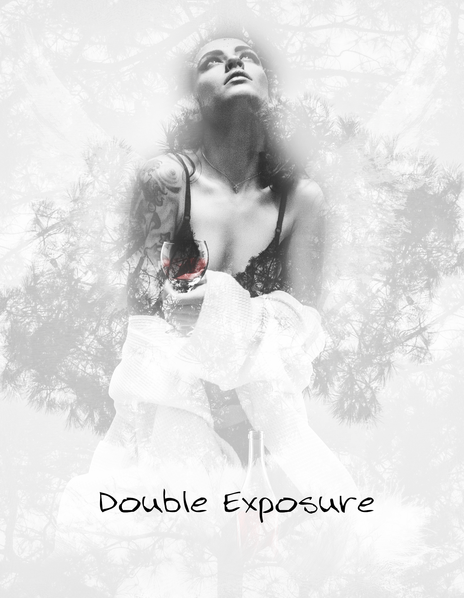

-
Illustrator
70% -
Photoshop
75% -
HTML5
80% -
CSS3
80% -
jquery
80% -
WordPress
50% -
PHP
30%
Illustration
Based on the knowledge learned in a practice school.
A logo, a card and a picture are being produced.
Please, please see it leisurely.
More Gallery......
Graphic Design
I make them synthesize more than one pictures and it's fantastic.
A picture was made.
Please, please see it.
More Gallery......
Web Design
HTML5, CSS3 and jQuery are used, and it's various.
I'll propose the web design.
It doesn't have a good record of performance, so it's a site on the vision.
Please see it.
More Gallery.......


Infomation menu